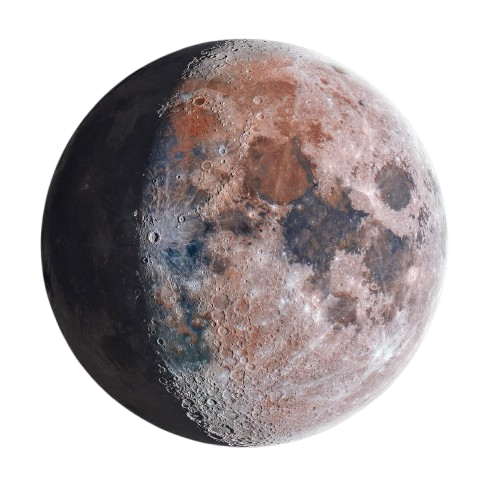
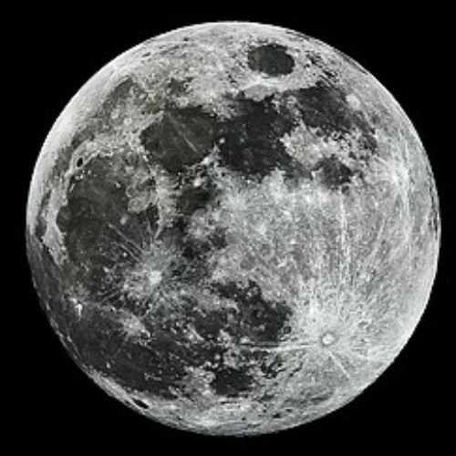
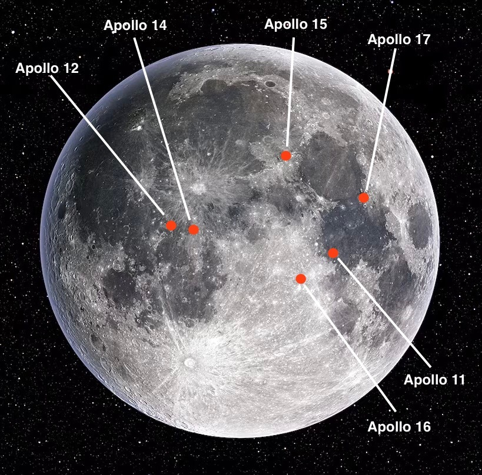
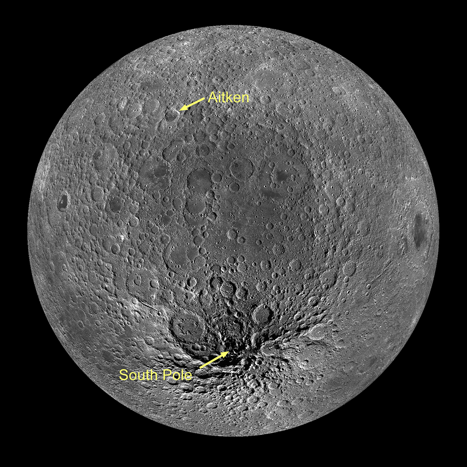

The Moon is Earth's only natural satellite and the fifth-largest moon in the Solar System. It formed about 4.5 billion years ago and has shaped Earth's tides, climate stability, and even the evolution of life. The Moon is the only celestial body beyond Earth that humans have visited.

The Moon is about one-quarter the diameter of Earth.
Average distance from Earth.
Only about one-sixth of Earth's gravity.
The Moon completes one orbit around Earth every 27.3 days.
Formed shortly after the birth of Earth.
Temperatures vary dramatically between lunar night and day.
Earth and the Moon form one of the most remarkable planetary systems in the Solar System. Their gravitational interaction creates ocean tides, stabilizes Earth's axial tilt, and gradually slows Earth's rotation while causing the Moon to drift farther away over time.
The leading scientific explanation for the Moon's origin is the Giant Impact Theory. Around 4.5 billion years ago, a Mars-sized protoplanet named Theia collided with the young Earth. The enormous impact blasted huge amounts of molten rock into space. Over millions of years, this material gathered together under gravity and formed the Moon.
Created from debris after a collision between Earth and Theia.
Approximately 4.51 billion years.
The impact helped stabilize Earth's rotation and axial tilt.
The Moon does not produce its own light. Instead, it reflects sunlight. As the Moon orbits Earth, different portions of its sunlit side become visible, creating the familiar lunar phases.
The Moon lies between Earth and the Sun, making its illuminated side invisible from Earth.
Half of the Moon's visible surface is illuminated.
Earth is positioned between the Sun and Moon, revealing the fully illuminated face.
The opposite half of the Moon remains illuminated before returning to a New Moon.
A lunar eclipse occurs when Earth passes directly between the Sun and the Moon, casting Earth's shadow onto the lunar surface. During a total lunar eclipse, the Moon often appears reddish because Earth's atmosphere bends red sunlight into the shadow.
The Moon is completely inside Earth's darkest shadow (umbra).
Only part of the Moon passes through Earth's shadow.
The reddish color is caused by sunlight filtered through Earth's atmosphere.
The Moon's surface has been shaped by billions of years of meteorite impacts and ancient volcanic activity. Fine dust known as regolith covers nearly the entire surface.
The dark regions visible on the Moon are called Maria, Latin for "seas." Early astronomers believed these smooth plains contained water, but they are actually vast fields of ancient volcanic basalt formed billions of years ago.
The Sea of Tranquility, where Apollo 11 landed in 1969.
One of the largest lava-filled impact basins.
A large volcanic plain created after a massive impact.
Without a thick atmosphere to burn up incoming meteoroids, the Moon has accumulated millions of impact craters over billions of years.
A young crater famous for its bright rays stretching across the Moon.
One of the most spectacular impact craters visible from Earth.
A giant crater over 225 km wide, easily visible through telescopes.
Recent spacecraft have confirmed that permanently shadowed craters near the Moon's north and south poles contain water ice. These frozen reserves may provide drinking water, oxygen, and rocket fuel for future human missions.
Confirmed by multiple lunar missions using orbital instruments.
Deep craters near the lunar north and south poles.
Essential for long-term Moon bases and future exploration of Mars.
NASA's Apollo Program was humanity's first successful effort to land astronauts on another world. Between 1969 and 1972, six Apollo missions successfully landed twelve astronauts on the Moon, forever changing our understanding of space exploration and science.
1961–1972
6 Crewed Missions
12 Humans
Apollo 11 became the first mission to land humans on the Moon. On July 20, 1969, Neil Armstrong and Buzz Aldrin landed in Mare Tranquillitatis (Sea of Tranquility) while Michael Collins remained in lunar orbit aboard the Command Module Columbia.
Neil Armstrong
Buzz Aldrin
Michael Collins
"That's one small step for man, one giant leap for mankind."
The Artemis Program aims to return astronauts to the Moon, establish a sustainable human presence, and prepare for future missions to Mars. Unlike Apollo, Artemis focuses on long-term exploration using modern spacecraft, lunar habitats, and international partnerships.
Successful uncrewed test flight of the Orion spacecraft in 2022.
First crewed lunar flyby mission of the Artemis era.
Planned mission to land astronauts near the Moon's South Pole.
First spacecraft to impact, orbit, and soft-land on the Moon.
China's successful lunar orbiters, landers, rovers, and sample-return missions.
India's missions that confirmed water molecules and achieved a successful south-pole landing.
NASA mission mapping the Moon in extraordinary detail since 2009.
Scientists and engineers plan to establish permanent research stations near the Moon's south pole. These bases could use local resources such as water ice to produce drinking water, oxygen, and rocket fuel while supporting future journeys to Mars.
Supports life support and fuel production.
A planned space station orbiting the Moon.
The Moon will serve as a testing ground for deep-space exploration.
Luna 2 became the first spacecraft to reach the Moon.
Luna 9 achieved the first successful soft landing.
Apollo 11 landed the first humans on the Moon.
Apollo 17 became the last crewed Moon landing.
NASA launched the Lunar Reconnaissance Orbiter.
India's Chandrayaan-3 successfully landed near the Moon's south pole.
The Moon is the primary cause of Earth's ocean tides.
Because it is tidally locked, we always see the same side of the Moon.
Astronaut footprints could remain on the Moon for millions of years because there is no wind or rain.
The Moon is slowly moving away from Earth by about 3.8 centimeters every year.
Water ice exists inside permanently shadowed polar craters.
The Moon is the brightest object in Earth's night sky after the Sun.
The Moon has fascinated humanity for thousands of years. It has inspired myths, guided calendars, helped sailors navigate the oceans, and eventually became the first world beyond Earth visited by humans. Today it remains one of the most important objects in astronomy because it preserves a record of the early Solar System and serves as the next destination for human exploration.
Unlike Earth, the Moon has almost no atmosphere and no liquid water on its surface. Because of this, its craters remain preserved for billions of years, providing scientists with a unique record of impacts that shaped the early Solar System. Rocks collected during the Apollo missions revealed important clues about the Moon's origin and confirmed that it formed from material ejected after a giant collision between Earth and another young planet.
The Moon also plays a vital role in Earth's environment. Its gravitational pull creates ocean tides, stabilizes Earth's axis, and slows our planet's rotation. Without the Moon, Earth's climate would have been much less stable over geological time, potentially affecting the evolution of life.
In the coming decades, the Moon will become humanity's gateway to deep space. NASA's Artemis Program and international lunar missions aim to establish long-term research stations, explore water ice at the poles, and develop technologies needed for future human missions to Mars and beyond.
Representative imagery of Earth's Moon from NASA and other space agencies.

The fully illuminated face of the Moon viewed from Earth.

Historic region where Apollo astronauts explored the lunar surface.

A region containing permanently shadowed craters with water ice.
Most scientists agree the Moon formed after a giant collision between Earth and a Mars-sized object called Theia about 4.5 billion years ago.
Because the Moon rotates once on its axis in exactly the same time it takes to orbit Earth, a phenomenon known as tidal locking.
Yes. Water ice has been discovered inside permanently shadowed craters near both lunar poles.
Twelve astronauts walked on the Moon during six Apollo missions between 1969 and 1972.
Not yet, but future lunar bases may become possible using local resources such as water ice for drinking water, oxygen, and rocket fuel.
The Moon stabilizes Earth's rotation, creates tides, preserves the history of the Solar System, and serves as the next major destination for human exploration.